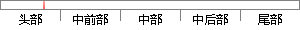

在此基础之上，微信小程序的前端框架设计标签语言为WXML，即(WeiXin Markup Language)，除了基础组件之外，它还有其他更加方便灵活的新特性，例如数据绑定、条件渲染、事件等，这些都大大简化了开发难度，有效地提升了开发效率。
片段位置图

相似结果|
1
原句片段：在此基础之上，微信小程序的前端框架设计标签语言为WXML，即(WeiXin Markup Language)，除了基础组件之
相似片段 1：WXML(WeiXin Markup Language)是框架设计的一套标签语言——微信小程序开发文档 WXML WXML(WeiXin Markup Language)是框架设计的一套标签语言,结合基础组件、事件系统...
相似片段 2：一:项目结构微信小程序项目结构主要有四个文件类型,如下 WXML (WeiXin Markup Language)是框架设计的一套标签语言,结合基础组件、事件系统,可以构建出页面的结构。...
相似片段 3：上一章我们已经介绍了微信小程序的目录的整体了解以及app系列文件的讲解,今天我们...WXML(WeiXin Markup Language)是框架设计的一套标签语言,结合基础组件、事件系统,...
相似片段 4：微信小程序 WXML 微信小程序 数据绑定 微信小程序 列表渲染 微信小程序 条件...WXML(WeiXin Markup Language)是框架设计的一套标签语言,结合基础组件、事件系统,...
相似片段 5：微信小程序(5) 作者同类文章 X 原文地址:WXML 说明 WXML(WeiXin Markup Language)是框架设计的一套标签语言,结合基础组件、事件系统,可以构建出页面的结构。其基本...
相似片段 6：WXML(WeiXin Markup Language)是MINA设计的一套标签语言,结合基础组件,事件系统,可以构建出页面的结构。简单的说就是微信团队自己设计出来一种xml标签语言,在小程序...
相似片段 7：这篇文章主要介绍了微信小程序 教程WXML的相关资料,这里提供了简单实例,需要的...WXML(WeiXin Markup Language)是MINA设计的一套标签语言,结合基础组件、事件系统,...
|
※ 片段修改建议 ※
近似词参考：- 基础：根本 根蒂根基 底子
- 程序：法式 步伐
- 设计：计划
- 语言：说话
- 除了：除
- 基础：根本 根蒂根基 底子
- 之外：以外
- 还有：另有
- 更加：加倍 越发 更为
- 方便：便利 利便 轻易
- 灵活：矫捷 灵动 天真 机动 灵便
- 特性：特征
- 例如：比方
- 条件：前提
- 渲染：衬着
- 事件：事务 事宜 变乱
- 开发：开辟
- 发难：举事 起事
- 提升：晋升 提拔
- 开发：开辟
- 效率：效力 服从
系统自动生成语句：在此根本之上，微信小法式的前端框架计划标签说话为WXML，即(WeiXin Markup Language)，除根本组件以外，它另有其他加倍便利矫捷的新特征，比方数据绑定、前提衬着、事务等，这些都大大简化了开辟难度，有效地晋升了开辟效力。
注：本片段修改建议为系统自动生成，仅供参考。